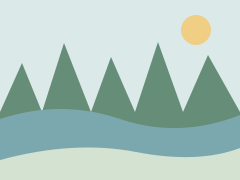

Маршруты
В каталоге собраны готовые маршруты путешествий по России: от прогулок по природе до поездок на несколько дней. Найдите маршрут по названию, выберите регион или откройте нужное направление.
Это макет каталога: поиск и фильтры пока не изменяют список маршрутов.
Маршруты по вашему запросу
Найдено маршрутов: 3.

Кругобайкальская дорога и Листвянка
- Длительность
- 3 дня
- Протяжённость
- 240 км
- Регион
- Иркутская область

Куршская коса пешком
- Длительность
- 2 дня
- Протяжённость
- 38 км
- Регион
- Калининградская область

Петрозаводск, Кивач и Марциальные воды
- Длительность
- 4 дня
- Протяжённость
- 310 км
- Регион
- Карелия